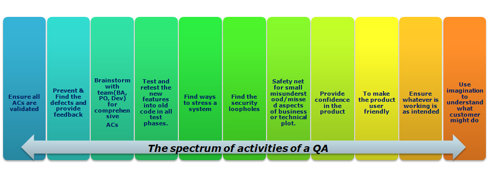

Why should you pay for a QA when you have automated tests?
Customer/Client: “We are now agile. There is no QA in an agile team. Developers can do their own testing. Why should I pay for a QA? I don’t need one!”
These days Developers build automated tests and integrate code-based tests as well by using various frameworks (e.g. mocks). Some developers follow the Test Driven Development approach and code all the tests, find where their fix breaks the code, as they don’t like QA finding the defects.
Developers may think their code is flawless because it compiles and runs, thinking testing unnecessary.
Hence, one may think there is no need for a QA!
During the course of regular software development, developers work on just a section of code at a time, and not on the entire application’s end to end functionality. Even if developers work on the entire application, no single person works on each and every part of the application. Someone or the other would have finished certain functionality.
Even if a team understands the merits of writing tests, some may consider that writing all tests may make development slow, so developers may skip writing certain or all tests.
Also, when you work on something intently for a long span of time, it can be easy to miss things that would otherwise stand out. The same thing can happen during software development. You need a second pair of eyes.
Myths about QA:
- QAs are negative.
- QAs just find the flaws.
- QA’s job is to break the application.
- QAs ask too many questions.
- Cosmetics issues found by QA are not really Issues.
- QAs run unnecessary extra tests which are not mentioned in Acceptance Criteria (AC).
- Improvement features found by QA should be deferred.
What QAs actually do :
- QAs are part of requirement specification meeting, helping the team to build a number of comprehensive acceptance criteria i.e. Provides input on what to take care of when developing the software.
- Investigate a product
- Always be asking “Why?”
- Thinks outside the box- scripted/unscripted/manual test.
- Provides feedback
- Provides ideas for product improvement
A day in the life of a QA :

- Ensure all ACs are validated by referring to User stories.
- Prevent & Find the defects and report and provide feedback.
- Brainstorm with the team(BA, PO, Dev) to have significant and comprehensive ACs.
- Ask questions and make suggestions for improvement to the product.
- Test and retest the new features added to the current code base in all test phases.
- Find ways to stress a system.
- Find the security loopholes.
- Provide a safety net for all small, misunderstood or missed aspects of business or technical plot.
- Provide confidence in the product.
- Make the product user-friendly.
- Ensure whatever is working is as intended.
- Use imagination to understand what customer might do.
In addition to ensuring that the product works as expected, QA often suggest scenarios that could help improve the product. This is because a good QA often ends up understanding the product better than the business and product owners, and almost as well as experienced product users.
Where a developer or programmer’s role is to create, a QA tester job is to break down, analyze, identify edge cases that should become ACs, find the broken pieces, and provide feedback so the product can be created and improved.
Well, that doesn’t mean you rely on QA and skip automated Unit Testing!
Remember – No amount of Tests can prove software right. But a single test/test idea can help identify severe flaws!